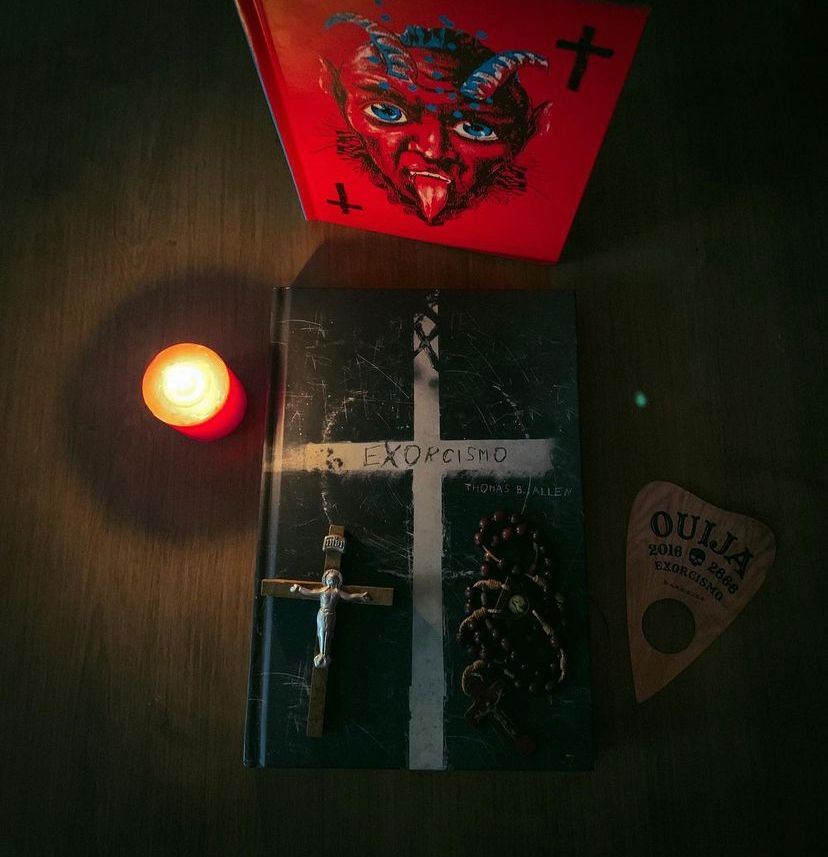

Exorcismo
(Thomas B. Allen - Darkside)
⭐⭐⭐⭐
Exorcismo narra em detalhes os fatos que aconteceram com Robert Mannheim, um jovem norte-americano de 14 anos que gostava de brincar com sua tábua ouija, presente que ganhou de uma tia que achava ser possível se comunicar com os mortos.Thomas B. Allen contou com uma santa contribuição para a pesquisa do seu trabalho. Ele teve acesso ao diário de um padre jesuíta que auxiliou o exorcista Bowdern. Como resultado, seu livro é considerado o mais completo relato de um exorcismo pela Igreja Católica desde a Idade Média.
Você sabe a verdadeira história por trás do fenômeno dos anos 70 - O Exorcista? O filme deu o que falar, gerando quase uma histeria coletiva mas, pouca gente sabe que por trás da garotinha Regan vomitando sopa de ervilha e profanando objetos religiosos a verdadeira inspiração do filme dirigido por William Friedkin e adaptado do romance que o roteirista Willian Peter Blatty escreveu dois anos antes, se trata na verdade de um exorcismo real e na obra de Thomas B. Allen vamos conhecer todos os detalhes macabros da história.
Exorcismo é um livro mais assustador que “O Exorcista”, talvez por se tratar de uma obra não ficcional, escrita por um jornalista que claramente pesquisou muito, teve acesso a fontes e depoimentos de envolvidos. O livro não é uma narração comum, portanto se você não gosta do estilo jornalístico deve passar longe da obra.
Se você gosta de terror e quer uma obra de dar calafrios “Exorcismo” é um prato cheio.
"Livrai-nos do mal, amém"